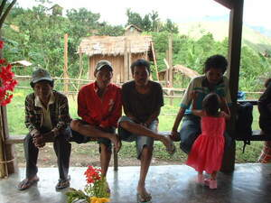

dangdang 
/daŋdaŋ/
v_rt.
“line_up”
1.
vi.
for someone (egdangdang, agent, eg><ø-) to line up themselves or something else (egdangdangen, theme, eg><en-)
Egdangdang a egpinnuu te iney ku.
I am going to sit beside up with my mother.
Egdangdangen ku pad te eggilamun ka andey ku.
I am going to weed beside my sister in-law.
Eng. line up
OCM: Miscellaneous Structures (349)
Online dict status: -
Usage level: M
2.
vi.
for someone (egdangdang, agent, eg><ø-) to sit or stand beside someone or something else (egdangdangan, location, eg><an-)
Egkeupian a ne egdangdang te alukuy ku su naluhey key e ka warè nekegkita.
I wanted to sit beside my friend because we did not see for a long time already.
O. Syn. andang
Eng. sit beside; stand beside; move beside; next to; adjacent
OCM: Miscellaneous Structures (349)
Online dict status: -
Usage level: M
3.
v.
(egparangdang, egpA><ø-) to help others in clearing a field; place (self, somebody or something) adjacent (to somebody or something)???
parangdang te kiliran
place yourself adjacent to his side
Eng. place adjacent
Tag. pilíngan; tabí
Ceb. tapad; tupad; abay
OCM: Weight Moving (483), Postures (516)
Online dict status: -
Usage level: R
Updated by: RJH,AAA,AAA,RUL,RJH
Last updated: 26/Apr/2017
This page last updated: 28-Dec-2019
Copyright © 2009-2014, Matigsalug Language Christian Association, Inc